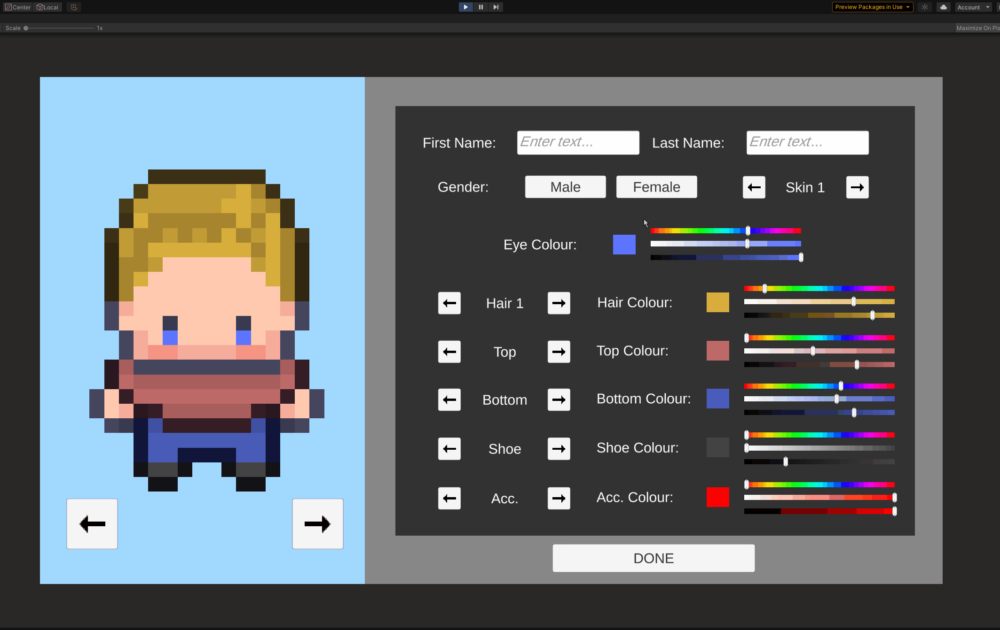

2D Character Creator
In my spare time I've been slowly working on a 2D management game and to start I wanted to work on character creation. I figured it would fun to learn and allowed me to play around in the engine to better improve my programming ability especially with UI and sprites. This is still a work in progress.
Features
With the character creator, I first found sprites to colour all white. This allowed me to avoid creating tons of sprites and give the player more
freedom when creating their characters. To create these colour sliders, I originally was going to overlay a texture online over the slider to create the
slider's visual look. However, I challenged myself to instead create textures at runtime that then can be adjusted based on the current colour value.
Although I had never played around with script made textures it definetly was daunting but so rewarding to see the final result.
The menu also includes a cyclable list of items that the player can dress in which all can be adjusted to any colour. Finally, I also implemented a
rotate button to turn the player's character around so they can see how they look. Here I had to store each direction and on each change, pull the same
sprites out that have that direction written in their name and apply them. This would also need to update all the cyclable groups.
Although a tedious task, I thought when character movement would be implemented this small feature be really helpful in changing the player's sprites.